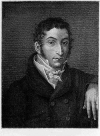

Карл Мария фон Вебер (1786 – 1826)
В истории западноевропейской музыкальной культуры имя Вебера связано, прежде всего, с созданием романтической немецкой оперы. Премьера его «Волшебного стрелка», состоявшаяся в Берлине 18 июня 1821 года под руководством автора, стала событием исторического значения. Она положила конец длительному господству иноземной, в первую очередь итальянской, оперной музыки на сценах немецких театров.
Детство Вебера прошло в атмосфере кочующего провинциального театра. Его мать была певицей, а отец скрипачом и руководителем небольшой театральной труппы. Приобретенное еще в детстве прекрасное знание сцены впоследствии очень пригодилось Веберу, как оперному композитору. Хотя постоянные разъезды мешали систематическому обучению музыке, уже в 11 лет он стал выдающимся виртуозом-пианистом своего времени.
С 18-летнего возраста начинается самостоятельная деятельность Вебера в качестве оперного дирижера. Более 10 лет он переезжает с места на место, не имея постоянного пристанища и испытывая огромные материальные трудности. Только в 1817 году он, наконец, поселился в Дрездене, взяв на себя руководство немецким музыкальным театром. Дрезденский период стал вершиной его творческой деятельности, когда появились лучшие оперы композитора: «Волшебный стрелок», «Эврианта», «Оберон». Одновременно с «Волшебным стрелком» были созданы две знаменитые программные пьесы Вебера – фортепианное «Приглашение к танцу» и «Концертштюк» для фортепиано с оркестром. Оба произведения демонстрируют характерный для композитора блестящий концертный стиль.
В поисках путей к созданию народно-национальной оперы Вебер обратился к новейшей немецкой литературе. Со многими немецкими писателями-романтиками композитор общался лично[1].
Опера «Волшебный стрелок»
«Волшебный стрелок» – самое популярное сочинение Вебера. Его берлинская премьера сопровождалась сенсационным успехом. Вскоре после нее опера обошла театры всего мира. Причин такого блистательного успеха несколько:
1-я, самая главная, это опора на традиции исконной немецкой культуры. Картины немецкого народного быта с его обычаями, излюбленные мотивы немецких сказок, образ леса (столь же распространенный в немецком фольклоре, как и образ раздольной степи в русском народном творчестве, или образ моря в английском). Музыка оперы наполнена мелодиями в духе крестьянских немецких песен и танцев, звуками охотничьего рога (самый яркий пример – темпераментный хор охотников из 3 д., получивший мировую известность). Всё это задевало самые сокровенные струны немецкой души, всё ассоциировалось с национальными идеалами.
«Для немцев…тут на каждом шагу свое, родное, и на сцене, и в музыке, столь же знакомое с детства, как нам, например, напев «Лучинушки» или «Камаринского»…» – писал А.Н. Серов.
2. Опера появилась в обстановке патриотического подъема, вызванного освобождением от наполеоновского деспотизма.
3. Важнейшей особенностью «Волшебного стрелка» является то, что Вебер совершенно по-новому подошел к обрисовке народной жизни. В отличие от опер XVIII века, персонажи из народа показаны не в комедийном, подчеркнуто бытовом плане, а глубоко поэтически. Повседневные сцены народного быта (крестьянского праздника, охотничьего состязания) выписаны с удивительной любовью, искренностью. Не случайно лучшие хоровые номера – хор охотников, хор подружек невесты – стали народными. Одни радикально изменили традиционный круг интонаций оперных арий и хоров.
Сюжет для своей оперы композитор нашел в новелле немецкого писателя Августа Апеля из «Книги о привидениях». Эту новеллу Вебер прочитал еще в 1810 году, но не сразу взялся за сочинение музыки. Либретто сочинил дрезденский актер и писатель И. Кинд, пользуясь указаниями композитора. Действие разворачивается в чешской деревне в XVII веке.
По жанру «Волшебный стрелок» – народно-сказочная опера с чертами зингшпиля[2]. Ее драматургия строится на переплетении трех линий, каждая из которых связана со своим кругом музыкально-выразительных средств:
- фантастическая;
- народно–жанровая, характеризующая образы охотничьего быта и лесной природы;
- лирико-психологическая, раскрывающая образы главных героев – Макса и Агаты.
Фантастическая линия оперы – самая новаторская. Она оказала огромнейшее влияние на всю музыку XIX века, в частности, на фантастику Мендельсона, Берлиоза, Вагнера. Ее кульминация – в финале II действия (в «Волчьем ущелье»).
Сцена в Волчьем ущелье имеет сквозное (свободное) строение, она состоит из ряда самостоятельных по материалу эпизодов.
В 1-м, вступительном, царит таинственная, зловещая атмосфера, звучит хор невидимых духов. Его жуткий, «инфернальный» (адский) характер создается предельно лаконичными выразительными средствами: это чередование двух звуков – « fis» и «a» в однообразном ритме, гармонизованных t и VII в тональности fis-moll.
2-й раздел – возбужденный диалог Каспара и Самьеля. Самьель – лицо не поющее, он только говорит, причем исключительно в своем царстве – Волчьем ущелье, хотя на протяжении оперы довольно часто появляется на сцене (проходит, исчезает). Его всегда сопровождает короткий и очень яркий лейтмотив – зловещее красочное пятно (аккорд и несколько отрывистых угасающих звуков в глухом звучании низких тембров. Это кларнеты в низком регистре, фаготы и литавры);
3-й эпизод (allegro) посвящен характеристике Каспара, с беспокойным нетерпением ожидающего Макса;
Музыка 4-го раздела характеризует появление Макса, его страх и душевную борьбу;
5-й, заключительный раздел – эпизод отливки пуль – кульминация всего финала. Она решена почти исключительно оркестровыми средствами. Каждая живописная сценическая деталь (появление жутких призраков, гроза, «дикая охота», пламя, исторгающееся из земли) получает свою оригинальную музыкальную характеристику с помощью тембровых и гармонических красок. Господствуют причудливые диссонансы, особенно уменьшенные септаккорды, тритоновые сочетания, хроматизмы, необычные тональные сопоставления. Тональный план строится по уменьшенному септаккорду: Fis – a – C – Es.
Вебер открывает новые изобразительные возможности инструментов, особенно духовых: staccato валторн, выдержанные низкие звуки кларнетов, непривычные тембровые сочетания. Новаторские открытия веберовской Волчьей долины оказали огромнейшее влияние на всю музыку XIX века, в частности, на фантастику Мендельсона, Берлиоза, Вагнера.
Образам мрачной фантастики противопоставлены жизнерадостные народные сцены. Их музыка – несколько наивная, простодушная, искренняя – пронизана фольклорными элементами, характерными мелодическими оборотами бытовой песенности, а также ярмарочной музыки Тюрингии.
Народно-жанровая линия воплощена в массовых сценах 1-го и 3-го актов оперы. Это картина крестьянского праздника в хоровой интродукции, сцена состязания охотников. Марш звучит так, словно его исполняют сельские музыканты. Подчеркнутой незатейливостью отличается деревенский вальс.
Основной образ оперы – Макс, первый типично романтический герой в музыке. Он наделен чертами психологической раздвоенности: влиянию Каспара, за которым стоят адские силы, противостоит чистота любящей Агаты. Полное раскрытие образа Макса, как и Агаты, дано в сцене и арии I акта. Это большая ария-монолог, где раскрывается глубокий душевный конфликт.
Замечательная увертюра «Волшебного стрелка» написана в сонатной форме с медленным вступлением. Она построена на музыкальных темах оперы (это зловещий лейтмотив Самьеля во вступлении, тема «адских сил» (главная и связующая партии сонатного Allеgro), темы Макса и Агаты (побочная партия). Сталкивая темы «адских сил» с темами Макса и Агаты, композитор логически приводит развитие к торжественно ликующей теме Агаты, которая звучит как гимн счастью и любви.
[1] С Э.Т.А. Гофманом, Виландом, Тиком, Брентано, Арнимом, Жан Полем, В. Мюллером.
[2] Музыкальные номера чередуются с разговорными диалогами. Самьель – лицо не поющее. В духе зингшпиля трактован второстепенный образ жизнерадостной, резвой Анхен.